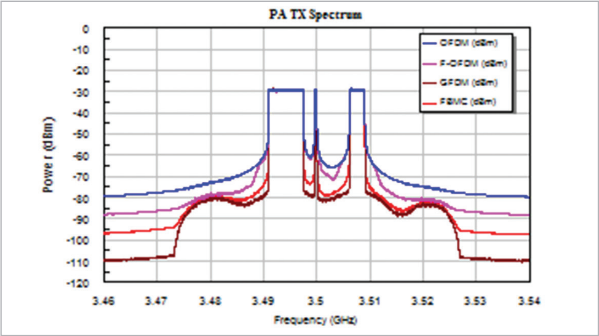

AWR Visual System Simulator
通信和雷达系统设计软件
AWR® Visual System Simulator™ (VSS) 是 Cadence AWR Design Environment® 平台内的通信和雷达系统设计软件，支持对混合信号（射频/数字）网络和级联射频模块进行实际测量。该软件有助于从单个系统图中识别出杂散产品的来源和系统指标，例如比特误码率 (BER)。商业及军事发射器和接收器的设计人员可以创建子系统架构，指定组件要求并进行优化，以实现最佳整体性能。
AWR 软件平台
使用射频/微波和基于测量、模拟或预测行为的信号处理模块，概念化并快速实施虚拟 5G 新无线电 (NR) 和物联网 (IoT) 通信以及雷达/电子战 (EW) 系统，以研究新架构和整体系统性能。设计射频感知系统，并使用射频/微波行为模型执行严格的链路预算设计，该模型包含线性和非线性性能指标，以及由于组件间阻抗失配而导致功率损耗的终端阻抗。用于射频/微波设计的 Cadence AWR Microwave Office® 电路设计软件以及 AWR Design Environment 的 Cadence AWR AXIEM® 平面和 Cadence AWR Analyst™ 任意 3DEM 求解器进行共同仿真，验证射频电路规格，从而对各个组件进行通信测量，并验证组件规格是否满足系统要求。

产品优势
数字调制系统
使用用于无线通信标准的 IP 库，设计系统架构和组件并对之进行仿真，包括 LTE-A、5G、窄带 IoT 等。预先配置的测试平台支持发射器一致性测试和接收器灵敏度分析，以及电路协同仿真，用于线性测量，例如在高峰均功率比 (PAPR) 下工作的功率放大器(PA) 的邻道功率比 (ACPR) 和 BER。
链路预算和杂散分析
执行射频级联测量，例如增益、噪声系数 (NF) 和三阶交调截点(IP3)，同时考虑整个信号路径中的阻抗失配。AWR VSS射频检查器 (RFI) 频域仿真工具可帮助设计人员识别沿射频链路任意位置的频率成分（由器件非线性引起的谐波和互调失真）。
相控阵系统
使用可重配置模型在相控阵中对关键天线性能进行仿真，该模型可根据测量或仿真得到的天线数据支持数千个辐射单元，用于开发波束成形算法，评估硬件损伤和进行射频链路分析。
硬件在环
即插即用功能，支持与 LabVIEW MATLAB 和 C++ 进行协同仿真，利用自定义模型、自动化脚本和用户定义的信号处理算法来扩展建模功能。
测试平台
测试平台经过预先配置，可用于进行常见测量，例如 ACPR、误差矢量幅度 (EVM)、频谱和许多其他类型的测量。例如，具有 5GNR 信号和测量功能的预配置测试平台支持对具有 5G NR 标准测试模型信号的组件或子系统进行性能验证。
5G/雷达库（可选配置）
5G/雷达库提供易于配置的信号源和接收器，可用于评估雷达和5G 系统级测量中使用的射频组件和/或射频链路。5G NR 发射器组件的预配置测量项目包括互补累积分布函数(CCDF)、AM 至 AM/PM、频谱、EVM，ACPR、IQ 星座图等。5GNR 接收器模拟灵敏度测量项目包括 BER、误块率 (BLER) 和吞吐量。对于雷达应用，该库提供了雷达信号生成、特定于雷达的目标和传播建模以及雷达信号处理功能，包括移动目标指示器 (MTI)、移动目标检测器 (MTD) 和恒定错误警报率计算器 (CFAR)。
功能
亮点
► 射频链路恶化分析
► RFA射频系统级架构规划工具
► 相控阵（MIMO/波束转向）生成工具
► 与 AWR Microwave Office 软件进行协同仿真
► EVM、ACPR 和相位噪声测量
► 无线通信标准测试平台，包括 5G NR 和窄带 (NB)-IoT
应用和技术
射频系统模型
射频系统模型包括基于射频行为、文件和电路的模型，这些模型可以快速执行基于频率的级联测量，例如级联 NF 或工作增益，或使用 RFI 工具在射频链路中的任何点识别频率成分。射频建模适用于表示模拟电压信号的系统设计部分，通常位于射频频率处，但并非总是如此。这些是设计的一部分，包括行为放大器、混频器和基于电路的滤波器，以及将 AWR Microwave Office 电路设计并入系统仿真中的模块。
通讯功率放大器
预配置的测试平台支持各行业组织提出的最新 5G 信号和框架，设计人员可借助该平台优化射频前端组件的性能并对之进行仿真，例如基于 PAPR 的 PA、相邻信道泄漏比 (ACLR)、EVM 或任意数量的关键放大器性能指标，并确定杂散产品和其他系统损害的来源。系统级的负载牵引分析可为通信性能指标（例如 ACPR 和EVM）生成等高线图，从而使设计人员能够针对无线通信系统中使用的线性 PA 对阻抗匹配网络进行优化。
相控阵生成器
AWR VSS 软件中的相控阵生成器向导使设计人员可以交互式地设计相控阵天线，然后生成代表设计的原理图或系统图。快速配置平面相控阵或多进多出 (MIMO) 阵列系统，以交互方式修改设计以实现所需的性能，并生成系统图和/或电路图以及电磁 (EM)结构，以便进行更严格的进一步分析。该向导支持布局、馈送网络设置、元素天线和射频链路设置、增益锥度和元素故障的交互式规范。
